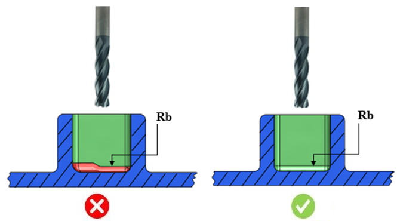

加工品質を向上させ、加工時間を短縮するためには、底面Rを均一にする必要があります。
適切で均一な底面Rを確保することが必要です。
優れた寸法精度と高品質な生産を実現するため。
加工時間を短縮するため。
工具コストを削減するため。
一般的なガイドラインとして、部品内の連続した形状（チェーン）では、底面Rを均一にすることが推奨されます。
DFMPro は底面Rを識別し、その均一性をチェックします。

ここでは、
Rb = 底面R